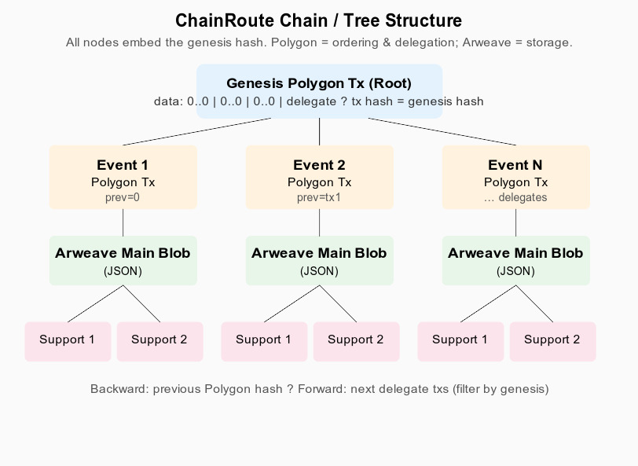

ChainRoute Protocol
Provenance without the heavy lifting
A lightweight way to create tamper-proof trails for art, collectibles, and supply chains
The problem with provenance
Knowing where something came from and who handled it matters—for art, luxury goods, critical parts, or certifications. But today:
- Centralized systems can be gamed or shut down.
- Heavy blockchains and smart contracts mean high fees and complexity.
- Custom tokens and incentives add overhead when you just want a simple, auditable history.
ChainRoute aims for the opposite: minimal, cheap, and verifiable—without contracts or tokens.
The big idea
Separate “who says it happened” from “where the data lives.”
- Storage → Permanent, open. Anyone can upload documents and event summaries (we use Arweave).
- Authority → Only designated “delegates” sign the chain. Their signatures live on a cheap, immutable chain (we use Polygon).
- One root → A single “genesis” transaction ties everything together. Every event and file points back to it.
Result: a tamper-proof trail you can verify from any link, without trusting a central server.
Two layers, one chain
Polygon (the index)
- One small transaction per event (127 bytes of data).
- Links: genesis hash, previous event, Arweave ID of this event’s summary, next delegate.
- No smart contracts—just signed data. Low fees, works with hardware wallets.
Arweave (the archive)
- Permanent storage for event summaries (JSON) and supporting files (photos, PDFs, etc.).
- Each item can tag the genesis hash so you can find everything for one chain.
- Retrieve anything via a stable ID—no chain reorgs, no deletion.
Key innovation: open uploads, authorized signing
Anyone can post data to Arweave. That’s good for flexibility—agents, labs, carriers can upload evidence without needing the “owner” key.
But only the current delegate signs the next Polygon transaction. So:
- Data can be open and redundant; the order and authority stay on-chain.
- Handovers are simple: put the new signer’s address in the next tx; they take over.
You get decentralization of data and a clear, single chain of who authorized what.
How it works (in practice)
- Genesis — Create the chain with one Polygon tx (zeros for hashes, yourself as first delegate). Its hash is the root.
- For each event — Upload supporting files to Arweave; build a short JSON summary (event type, timestamp, links to those files); upload that to Arweave; then sign a Polygon tx with genesis hash, previous tx hash, this event’s Arweave ID, and the next delegate.
- Verification — From any Polygon tx or Arweave file, read the genesis hash, then scan Polygon for all txs with that genesis and walk backward/forward. For each tx, fetch the Arweave summary and supports.
Architecture
One root; events chain backward; data lives on Arweave.

Genesis Polygon tx → events (Polygon) → main blobs + supporting files (Arweave).
Design goals
Simplicity Resilience Flexibility Efficiency Security Extensibility
- Simplicity — 127 bytes per Polygon tx; no contracts.
- Resilience — Single genesis root; no forks or orphans.
- Flexibility — Delegation for handovers; anyone can upload to Arweave.
- Efficiency — Cheap fees; verify by scanning Polygon and fetching Arweave.
- Security — Chain immutability + hardware wallets.
- Extensibility — Optional multi-sig, event types, or other chains later.
Possible applications
- Art & collectibles — Authentication, sales, loans, conservation. One chain per work; photos and certs on Arweave, order and signers on Polygon.
- Supply chain — Shipments, inspections, handoffs. Each leg can add an event; delegates can be carriers, customs, or buyers.
- Certifications & credentials — Training, compliance, audits. Issuer creates genesis; later events record renewals or revocations.
- High-value assets — Anything where “who had it when” matters and you want a minimal, verifiable record without running a full blockchain.
Example: Hypothetical Painting
We built a fictional six-stage provenance example for a high-value painting: authentication (Paris) → secure transport → auction drop-off → live sale → handover → long-term storage (London).
- One genesis; six events; each event has a JSON summary on Arweave plus supporting files (photos, reports, receipts).
- Fictional signers (estate, authenticator, logistics, auction house, buyer’s counsel, vault) show how delegation can pass from party to party.
See docs/examples/HypotheticalPainting for payloads, event JSONs, and a slide deck. All data is made up for protocol demonstration.
Verification
You don’t need to trust a single company or API. To audit a chain:
- Get the genesis hash from any Polygon tx or Arweave file in that chain.
- Query Polygon (e.g. Polygonscan) for transactions whose data starts with that hash.
- Walk backward using the “previous Polygon hash” field; walk forward by following delegate addresses.
- For each Polygon tx, load the Arweave blob by ID; check that its genesis matches; optionally fetch linked support files.
Everything is public and independently verifiable.
Why ChainRoute vs other approaches?
Protocols like VeChain or OriginTrail bring tokens, complex graphs, or enterprise stacks. ChainRoute is deliberately minimal:
- No tokens — You don’t need to hold or spend a protocol token.
- No smart contracts — Just 127-byte payloads and standard wallets.
- Low cost — Polygon fees are small; Arweave is one-time pay-for-permanence.
Good fit when you want a simple, auditable history. For heavy compliance or tokenized ecosystems, other tools may still make sense.